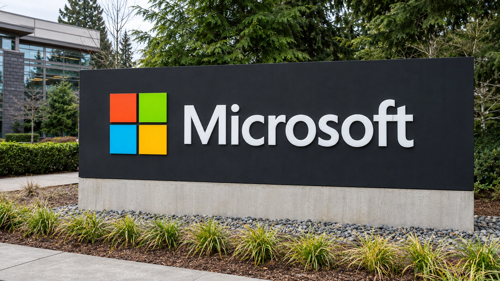

Microsoft’s Nscale Expansion Decision Separates AI Options From Orders
Reuters reports that Microsoft will not exercise a Texas capacity option. Existing commitments remain distinct from expansion rights that have not become firm orders.

Microsoft will not exercise a Texas expansion option with Nscale, Reuters reported on November 5, citing an unnamed source. Its report distinguishes existing contracted capacity from an additional expansion right.
Reuters said the decision predated Nscale’s September IPO filing by months and left existing work unaffected. Neither company had responded at publication. The report concerns an earlier decision.
For investors assessing data-center developers, the distinction changes which revenue can support a financing case. A potential expansion can make a site look strategically valuable. It does not provide the same evidence of future receipts as an executed agreement with defined delivery and payment conditions. Combining the two can overstate the certainty of a development pipeline.
The original arrangement contained a separate expansion right
Nscale’s October 2025 announcement described a Microsoft deployment of roughly 104,000 NVIDIA GB300 GPUs at a Texas site leased from Ionic Digital, representing approximately 240 megawatts. It separately described Microsoft’s option to support a second phase of about 700 megawatts from late 2027. Those were announced plans, not proof that all capacity had been delivered.
The initial agreement and the expansion option therefore represented different stages of commitment. A customer could retain the original arrangement while deciding against the additional phase. The unused option would reduce the developer’s prospect of that particular customer taking more capacity, without establishing that the original order had disappeared.
The difference also matters for construction planning. A developer may reserve land, seek power connections or prepare engineering work for a larger campus before every phase has a tenant. That preparation can create future flexibility. It also puts a cost against a possibility whose timing, customer and commercial terms may still change.
Contract value is still subject to delivery
Nscale’s September registration statement describes Microsoft statements of work providing for payments of up to $43.8 billion through December 2033, subject to delivery and service availability. A maximum contractual value across several years is neither current annual revenue nor cash already collected. The conditions attached to earning it remain relevant even where the agreement itself is firm.
A data-center operator typically has to finance equipment and infrastructure before receiving the full stream of customer payments. Delayed delivery can therefore affect both the timing of revenue and the period during which financing costs accumulate. A large headline contract can improve commercial visibility without removing the need to fund that interval.
Our analysis of financing the AI infrastructure buildout examines that gap between commitments and cash. Investors need to know which party funds construction, who owns the equipment, when service acceptance occurs and how payment obligations respond to delay. A total contract figure cannot answer those questions on its own.
An unused option does not establish an industry downturn
One customer’s decision on one expansion cannot establish the direction of aggregate demand for AI computing. Microsoft can compare sites, delivery dates, hardware and commercial terms across its wider infrastructure program. Passing on additional capacity at a particular location does not disclose what the company may buy elsewhere.
The opposite assumption would also be too strong. Continued growth in demand across the sector would not ensure that every proposed campus earns an attractive return. Developers compete on power availability, construction timing, operating reliability and the cost of delivering service. Capacity that arrives late or on expensive terms can be less useful to a customer even during a broader expansion.
Our earlier coverage of Microsoft, Nscale and the Loughton site concerned a different location and power-connection constraints. It should not be combined with the Texas report as though the two described one canceled facility. The comparison is useful because it shows why site-specific delivery conditions matter alongside broad estimates of AI demand.
The financial test is the next binding commitment
If a developer seeks another customer for an expansion, discussions are a step toward a possible transaction. They are not a substitute for signed terms, financing or a workable delivery schedule. Investors can assess progress more precisely when reporting separates operating capacity, contracted projects and capacity that remains available for marketing.
For a prospective public-market investor, that separation also helps identify concentration risk. A project can depend heavily on a small number of customers even when the announced contract values are large. Diversification requires additional credible counterparties and enforceable arrangements, rather than a larger list of potential users.
The November report narrows the role of a previously advertised expansion right. It does not provide evidence that Microsoft’s existing Nscale contract has ended. The next material development would be a binding replacement commitment, a change in the confirmed delivery schedule or a company disclosure that changes the economics of the existing work.